|
Was ist Game of Life?
Das Game of Life (Lebensspiel) ist eine Computersimulation. Lebewesen
verteilen sich auf einem unbegrenzten, karierten Feld. Je nach Nachbarschaft
bleiben sie am Leben, sterben oder bringen neues Leben hervor.
Im Beispiel geht man von einer Population von 7 Lebewesen aus. Sie vermehren
sich bis auf 12 und sterben nach 6 Generationen aus (1, Seite 149ff.).
Game of Life kann auch als zellulärer Automat angesehen werden,
bei dem der Zustand einer Zelle vom eigenen Zustand und von dem der Nachbarzellen
abhängt.
Das Spiel wurde 1970 vom englischen Mathematikprofessor John Conway
entwickelt.
Regeln top
Jede neue Generation wird nach einer Überlebensregel
(I), einer Sterberegel (II) und einer Geburtsregel (III) ermittelt.
| ....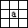.... |
Eine Zelle a ist entweder von einem Lebewesen besetzt oder nicht. Welchen
Zustand sie in der nächsten Generation hat, hängt von der Besetzung
der acht Nachbarzellen ab. |
1. Fall: Die Zelle a ist besetzt.
(I) Das Lebewesen in dieser Zelle überlebt, wenn es 2 oder 3 Nachbarn
hat.
(II) Das Lebewesen stirbt, wenn es 0, 1, 4, 5, 6, 7 oder 8 Nachbarn
hat.
(Bei keinem oder einem Nachbarn stirbt es aus Einsamkeit, bei 4 bis
8 wegen Überbevölkerung.)
2.Fall: Die Zelle a ist nicht besetzt.
(III) Gibt es zu dieser Zelle genau 3 Lebewesen in den Nachbarzellen,
so entsteht hier ein neues Lebewesen. In allen anderen Konstellationen
bleibt sie leer.
Anwendung auf das Beispiel
top
Auf diese Weise kann man zu jeder Population schrittweise die nachfolgende
Generation ermitteln. Es genügen Bleistift, kariertes Papier und Radiergummi.
Natürlich ist es besser, die vielen stupiden Denkschritte einem Computer
zu überlassen.
Computereinsatz top
| ...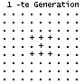... |
In den siebziger und achtziger Jahren haben sich viele Computernutzer
mit diesem Spiel beschäftigt und ein Programm geschrieben (links).
Wegen der hohen Auflösung und vor allem wegen der Schnelligkeit
heutiger Computer hat das Lebensspiel eine neue Qualität erhalten. |
Will man das Spiel des Lebens kennen lernen, sollte man sich z.B. aus dem
Internet ein Programm besorgen (z.B. Life32, siehe Linkliste) und damit
experimentieren.
Stillleben top
| ...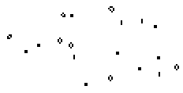... |
Im Anfangsbeispiel oben verschwand die ausgesetzte Population nach
6 Generationen.
Bei anderen Ausgangskonstellationen bleiben meist zum Schluss stabile
Populationen (und "Blinker") zurück. |
Die stabilen Populationen enthalten nur Lebewesen
mit 2 oder 3 Nachbarn und ändern sich nicht mehr. Sie heißen
nach Conway Stillleben (still lifes).
Hier ist eine Darstellung einiger bekannter Stillleben.
Populationen mit wenigen Lebewesen sind erforscht. Wer sie gefunden hatte,
durfte ihnen einen Namen geben.
Oszillatoren top
| ...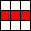... |
Eine andere auffällige Population ist der Blinker. Er besteht
aus drei Lebewesen, die abwechselnd übereinander oder nebeneinander
liegen. |
Er gehört zu den Periode-2-Oszillatoren (periodic 2 oszillators, p2).
Hier ist eine Zusammenstellung bekannter p2-Populationen:
Die Perioden können auch größer
als 2 sein:
Links ein Periode-3-Oszillator (p3), das Kreuz (cross), rechts ein Periode-60-Oszillator
in Aktion (p60).
Bewegung top
Gleiter
| ...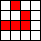... |
Es gibt merkwürdige Gebilde, die sich diagonal auf dem Feld bewegen.
Sie bringen ein interessantes Moment in die Abfolge der Generationen. Die
"Gleiter" bestehen in jeder Phase aus 5 Lebewesen und haben die "Periode"
4. |
Gleiterquelle top
| ...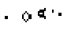... |
Das ist schon höhere "Game of Life"-Wissenschaft: Im Bild links
steht eine unscheinbare Anordnung von Lebewesen. Verfolgt man die nachfolgenden
Generationen, so werden gleichmäßig Gleiter auf die Reise geschickt. |
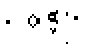 |
Nach jeweils 30 Generationen wiederholen sich die Bilder.
In (amerikanischem) Englisch heißt diese Anordnung "glider gun".
Eater top
|
...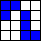...
|
Links steht ein "Fresser", der gleichzeitig ein Stillleben ist. Trifft
ein Gleiter an einer bestimmten Stelle und in einer bestimmten Phase auf
ihn, so geht der Eater ungeschoren aus dem Zusammenprall hervor. Der Gleiter
stirbt. |
...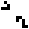... |
Spaceships top
| ...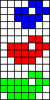... |
Auch "Raumschiffe" bewegen sich. Es gibt sie in drei Größen:
Sie heißen lightweight spaceship, middleweight spaceship und heavyweight
spaceship, abgekürzt LWWS, MWSS und HWWS.
Die Populationen erinnern sowohl im statischen Zustand als auch in der
Bewegung mehr an Vögel als an Raumschiffe. |
...... |
Dreier-Crash top
|
...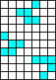...
|
Drei Gleiter bewegen sich aufeinander zu, stoßen zusammen und
dann? |
Populationen mit
einer Geschichte top
Eine beliebte Beschäftigung ist die Entdeckung von Populationen
mit interessanten Verläufen. Populationen mit wenigen Lebewesen sind
erforscht und katalogisiert.
| ...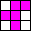... |
Eine bekannte Population dieser Art hat die Form eines F-Pentominos.
Sie hat eine bewegte Entwicklung:
Stillleben und Blinker entstehen, werden wieder aufgesogen und bilden
sich erneut. Insgesamt 6 Gleiter entfernen sich auf Nimmerwiedersehen.
Am Ende bleibt nach 1102 Generationen eine Population mit 15 Stillleben
und 4 Blinkern zurück. |
|
Die folgenden Beispiele haben interessante und
zum Teil lange Geschichten. Darauf weisen die Namen hin.
Es ist faszinierend, welche Populationen aus Hunderten
von Lebewesen man sich schon ausgedacht hat. Aus Grundfiguren werden
komplizierte Arrangements zusammengestellt. Es kommt zu vielfältigen
und skurrilen Bewegungsabläufen.
Selbstgemachte Populationen
top
"Es gibt nichts Gutes, außer man tut es."
Es genügt, auf der Eingabeoberfläche zu kritzeln. Daraus entwickeln
sich unvorhersagbare Populationen.
| ...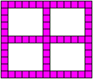... |
Gibt man eine symmetrische Figur vor, so bleibt die Symmetrie in allen
nachfolgenden Generationen erhalten. Dadurch ist sie zu jeder Phase ansehnlich.
Manchmal hat man Glück:
Wenn man zu Beginn eine Population in Form eines Fensters 13x11 (links)
aussetzt, verlassen vier Gleiter die Mitte. Rechts der Moment der Geburt
der vier Gleiter! |
..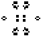.... |
Game of Life im Internet top
Deutsch:
Axel Rasmus
Applet
für das Game of Life
Ronald Poppe
Und
daraus entsteht Leben!
Wikipedia
Game
of Life
Englisch:
Achim Flammenkamp
Game of Life
Alan Hensel
Conway's
Game of Life
HKoenig
Game
of Life
Johan G. Bontes
Life32
John Saeger
Game
of life (number 0 in the series "Stuff I write when I'm bored")
Mark D. Niemiec
Mark D.
Niemiec's Life Page
Paul Callahan
Patterns,
Programs, and Links for Conway's Game of Life
What
is the Game of Life? (Wonders of Math)
Wikipedia
Conway's
Game of Life
Links zuletzt überprüft am 07.01.2006
Referenzen top
(1) Wilfried Schupp: Schüler programmieren in BASIC, Paderborn
1980
Kommentar
top
Das Buch von Wilfried Schupp hat mich damals
mit dem Spiel bekannt gemacht. Ich bin nach 20 Jahren wieder auf
"Game of Life" gestoßen. Es ist erstaunlich, welche Entwicklung diese
Spielerei mit einem wissenschaftlichen Ursprung bis zu den heutigen (geschrieben
2000) schnellen Computern genommen hat. Auch gibt das Internet jetzt Informationen
preis, die mir früher nicht zugänglich waren.
Feedback: Emailadresse auf meiner Hauptseite
Diese
Seite ist bald in Englisch vorhanden.
URL meiner
Homepage:
http://www.mathematische-basteleien.de/
©
2000 Jürgen Köller
top |